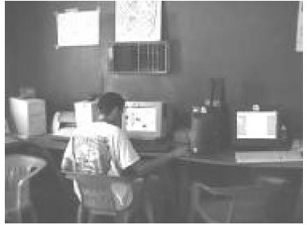

El café Internet: un espacio real para la virtualidad. Jóvenes y ciberespacio en el noroeste de México
Ciberpapelería lo que llama la atención es que resulta mucho más difícil que estas papelerías ofrezcan una taza de café, aunque eso no ha sido impedimento para que algunas de ellas adopten el nombre, dada la popularidad adquirida por estos establecimientos
(véanse figura 1).
"Cyber-papelería", ubicada en la colonia Miravalle, en Ciudad Obregón, Sonora.
En nuestros recorridos por las ciudades visitadas igual encontramos cafés Internet establecidos con todas las comodidades que aquéllos instalados en la cochera de una casa o con piso de tierra y en condiciones que aparentan un deshuesadero de computadoras. Pese a todo lo anterior en este último había cuatro computadoras conectadas y varios preparatorianos haciendo tareas y chateando
(véanse figuras 2 y 3)

Cibercafé en una colonia popular de Ciudad Obregón, Sonora.
Cibercafé en una colonia ejidal de la zona rural de Ciudad Obregón, Sonora.